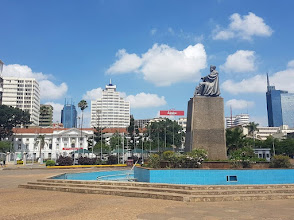
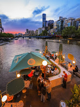
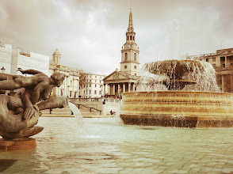
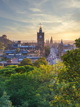
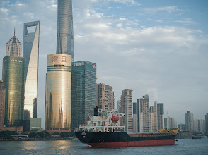
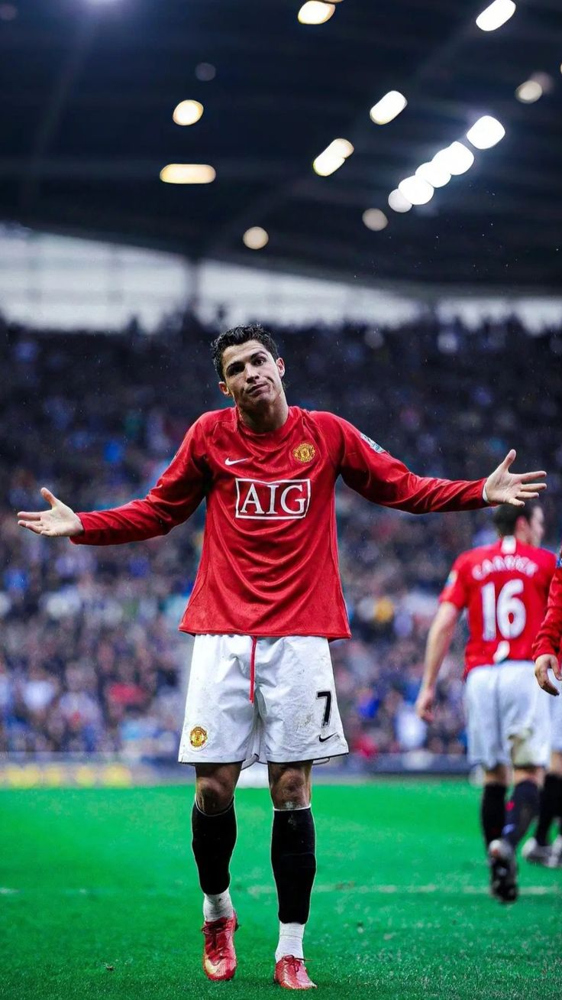
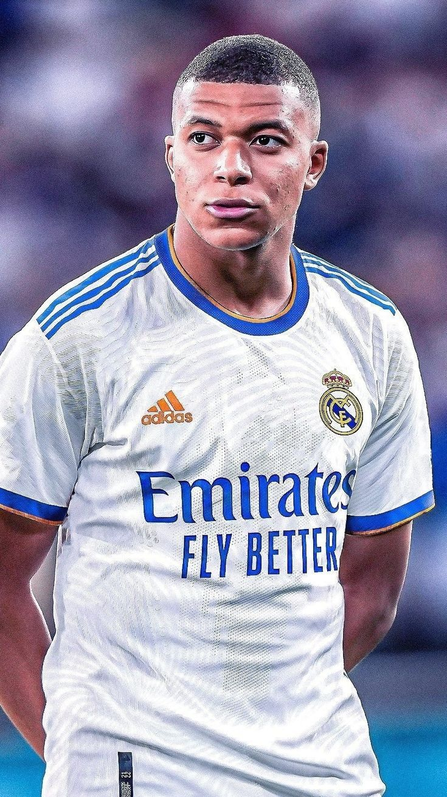
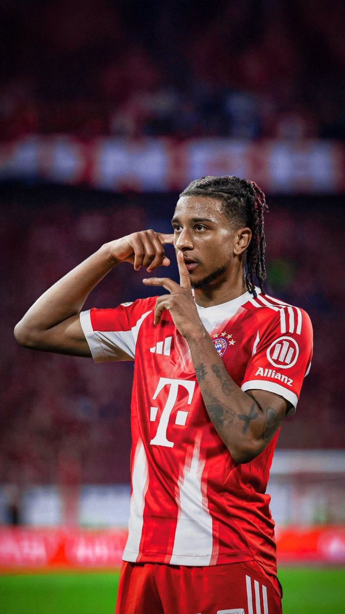
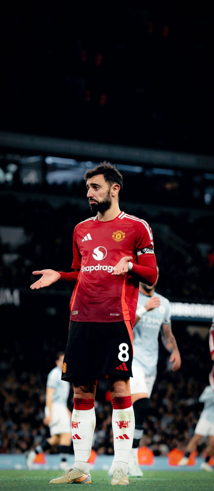

HTML IMAGES
Cities
Nairobi

Nairobi is a fast growing city in Africa, it's location is welll placed thus it becoming the heart of the East African economy
- Population : 10 million
- Currency : Kenyan Shillings
- Staple Food : Maize
- Known For : East African economic hub
Melbourne

Melbourne is a city in Australia
- Population : 30 million
- Currency : Australian Dollar
- Staple Food : Wheat
- Known For : Its beautiful city
London

London the capital of The United Kingdom. It is regarded as the heart of Europe and one of the biggest cities in the world.
- Population : 70 million
- Currency : GBP
- Staple Food : Pasta
- Known For : Global connectivity and culture
Edinburg

Edinburg is one of the most thriving cities in the United Kingdom.
- Population : 40 million
- Currency : GBP
- Staple Food : Pasta
- Known For : Historic beauty and local vibe
New York

New York is one of the most important cities in the world. Well known for its thrivingness in the Global economy
- Population : 80 million
- Currency : US Dollars
- Staple Food : Lezania
- Known For : New Stock exchange
Shanghai

Shanghai is regarded as the face of Asia. It is a city that has embraced modernisation while also keeping their cultural identity.
- Population : 75 million
- Currency : Ruppies
- Staple Food : Noodles
- Known For : Its Culture
Football Players
Cristian Ronaldo

Cristiano Ronaldo regarded as the best player of all times, is a Portuguess professional footballer
- Full name : Cristiano Ronaldo dos Santos Aveiro
- Born : 5th February 1985
- Age : 41 years
- Current team : Al-Nassar
- Salary : 208.4 million
Kylian Mbappe

Kylian Mbappe is a French World Cup Winner
- Full name : Kylian Mbappe
- Born : 20th December 1998
- Age : 27 years
- Current team : Real Madrid
- Salary : 31.25 million
Michael Olise

Michael Olise is a French Proffesional footballer, whom has really grown the ranks in the footballing world.
- Full name
- Michael Olise
- Born
- 12th December 2001
- Age
- 24 years
- Current team
- Bayern Munich
- Salary
- 13.5 million
Bruno Fernandes

Bruno Fernandes is a Portuguess professional footballer and the captain of Manchester United the biggest club in the world.
- Full name : Bruno Fernandes
- Born : 8th September 1994
- Age : 32 years
- Current team : Manchester United
- Salary : 15.6 million